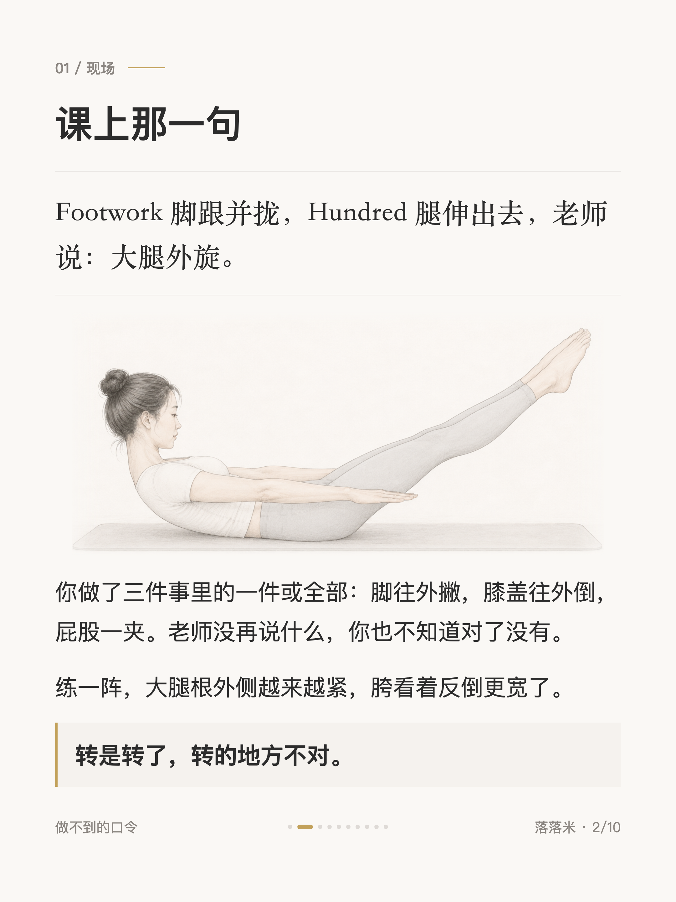
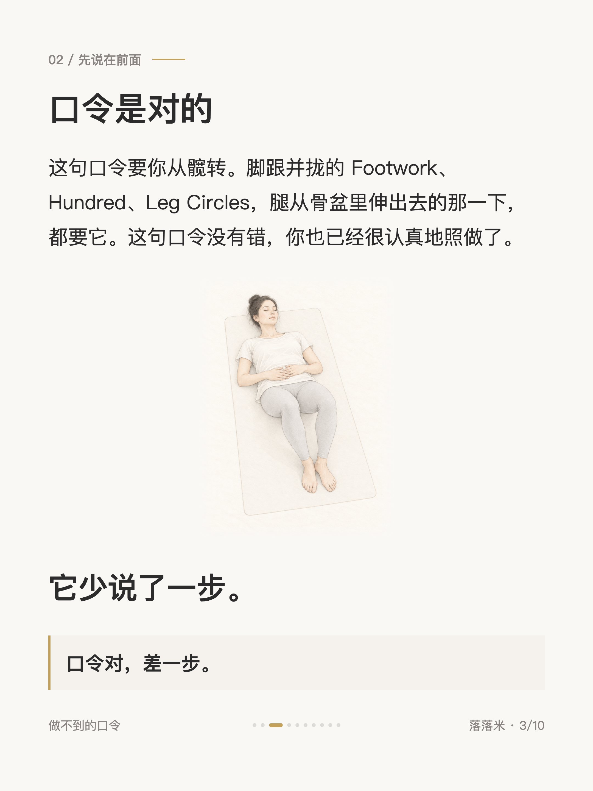
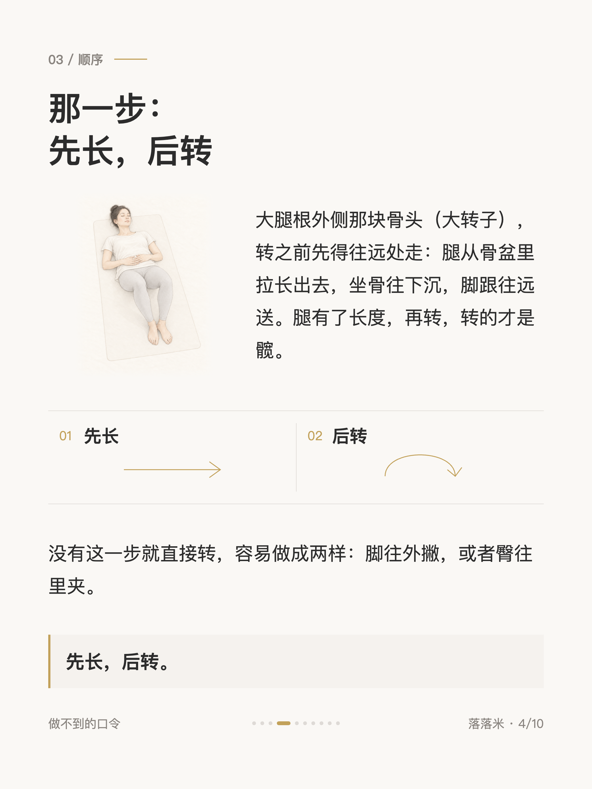
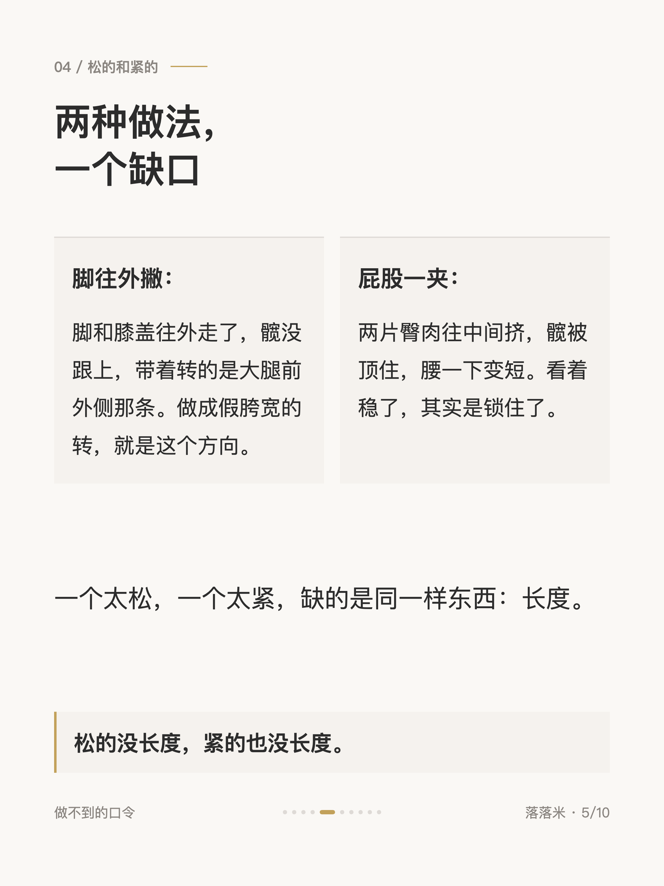
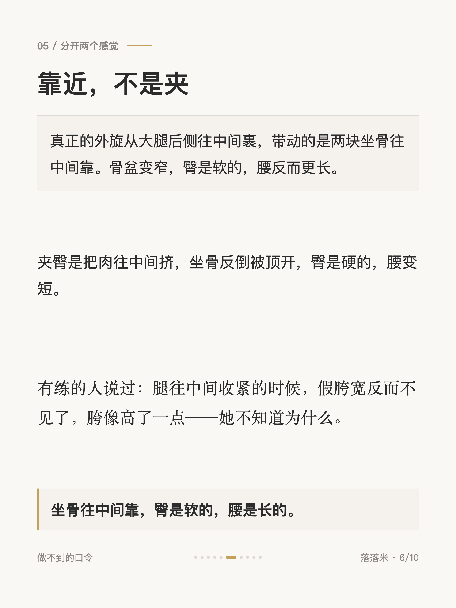
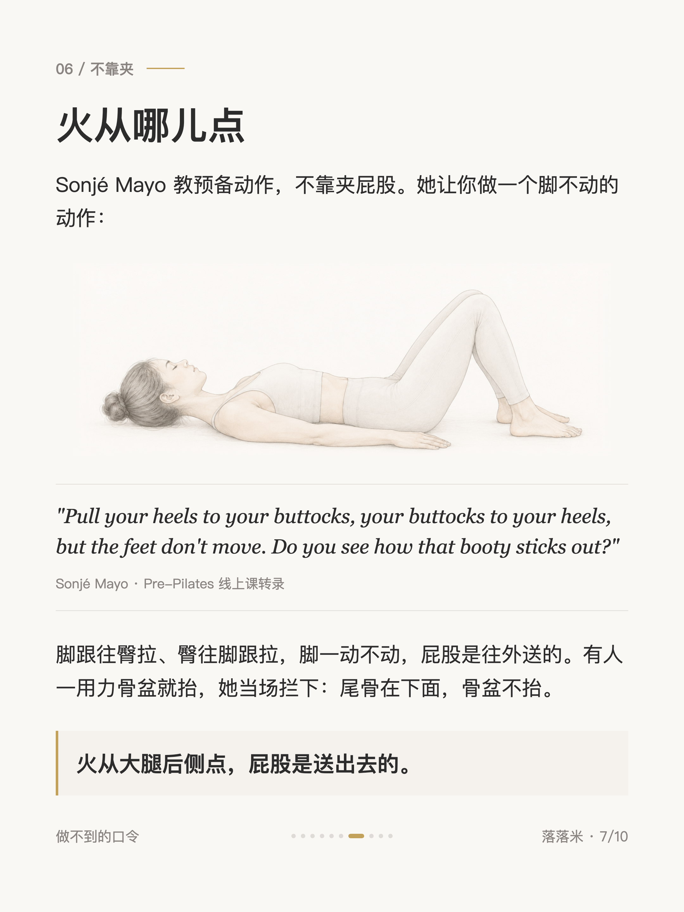
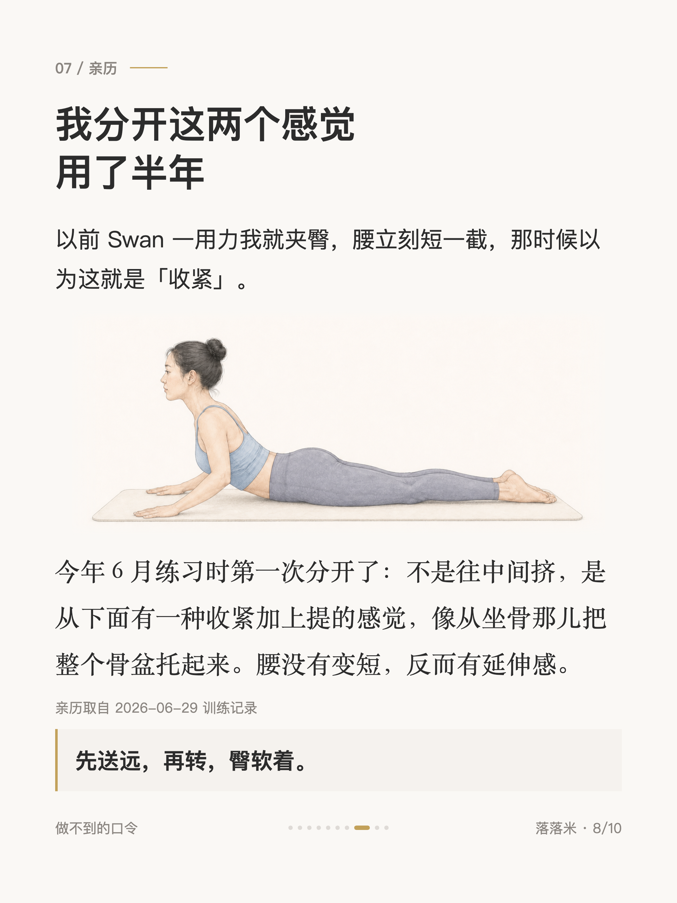
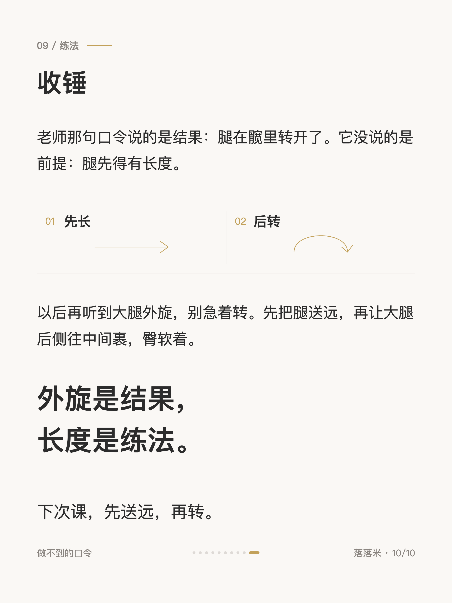

做不到的口令 #002
普拉提大腿外旋做成了假胯宽，差在一步

1 / 10

2 / 10

3 / 10

4 / 10

5 / 10

6 / 10

7 / 10

8 / 10
9 / 10

10 / 10
← 左右滑动浏览全部卡片 →
「大腿外旋」这句口令我照做了大半年，转的一直是脚，用力的时候还夹臀，大腿根外侧越练越紧。后来才分清，它少说了一步：先把腿送远，再转。
那一步在卡片里。倒数第二张有一个一手摸臀、一手摸大腿根的自测，三个读数，在家就能做。